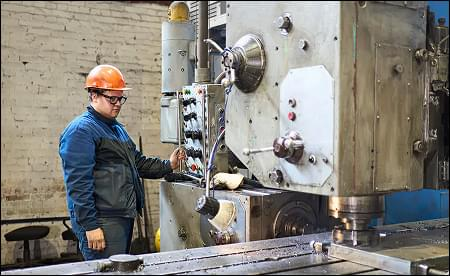

{kind=link}

Уникальный фрезерный станок вскоре пополнит парк оборудования «НТЗМК»
Установку сейчас изготавливает китайская компания. Высокоскоростной трехкоординатный фрезерно-сверлильный станок с подвижным порталом производится по индивидуальному заказу «НТЗМК» и пока его аналогов в мире нет.
{kind=link}
Разработчики оснастили станок основной поворотной фрезерной головой мощностью 50 кВТ и боковыми — 45 кВТ-ми. Наделили станок широкими возможностями: предварительная фрезеровка плоскости прилегания фланца, финишная фрезеровка фланца в автоматическом режиме, автоматическая обработка металлоконструкций в пяти плоскостях, без смены положения заготовки. Параллельно можно проводить сверление, зенкование, маркировку, гравировку и фрезеровку на боковых поверхностях обрабатываемой конструкции. Станок сможет сверлить технологические отверстия балки в собранном виде, что увеличит точность изготовления конструкции.
Станок предназначен для фрезерования крупных конструкций: балок, колонн. Способен обрабатывать 14- метровые детали шириной до 3-х метров и высотой до 1.8 метра. Кроме того, он оснащен тремя лазерными датчиками, позволяющими определять положения заготовки и устанавливать координаты обработки
Евгений Бельтюков
Технический директор ООО «НТЗМК»
Как только станок будет готов, нижнетагильские специалисты отправятся в Чэнду принимать работу и устраивать тест-драйв.
«На месте будет реальное фрезерование, сверление той конструкции, которую мы заказали. При заключении договора мы согласовывали совместную программу «горячей» приёмки и конструктив обрабатываемой заготовки, которую подготавливает производитель оборудования. После этого станок разберут, упакуют и отправят в Россию», – прокомментировал Евгений Бельтюков.
Посылку из Кита на заводе ждут в начале 2026 года. Установка стоимостью 145 миллионов рублей призвана заменить морально устаревший горьковский станок по фрезерованию торцов металлоконструкций. Оборудование 1961 года выпуска ждет глобальная модернизация. Но отказываться от него не собираются. Подобных в стране остались единицы.
Сейчас «НТЗМК» готовит площадку для нового оборудования. Чертежи фундамента уже готовы. Работы по его возведению начнутся осенью.